Hotel Punta del Sur
El Hotel Punta del Sur es el establecimiento más moderno del municipio de Cuevo. Ofrece desayuno, almuerzo, bar, gimnasio, piscina y salón de eventos, además de áreas de descanso y parrillera.
Habitaciones: 16 (capacidad 31 personas)
Contacto: Sra. Evangelina Canizares – WhatsApp: 70952872
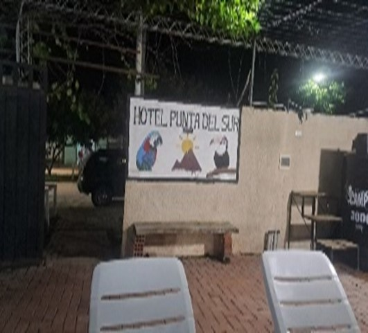

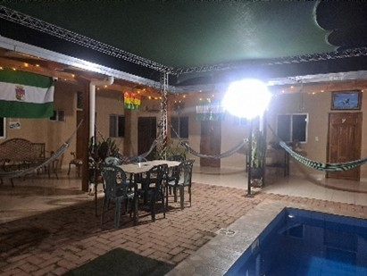
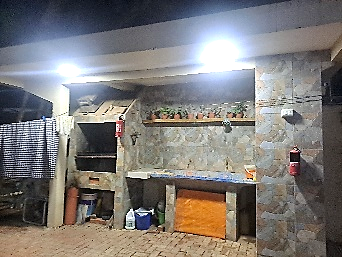

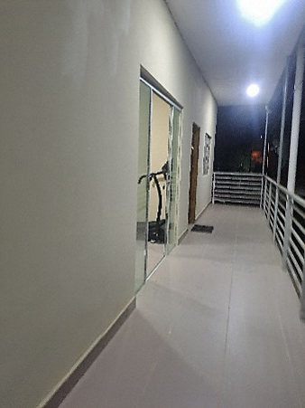
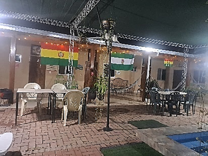
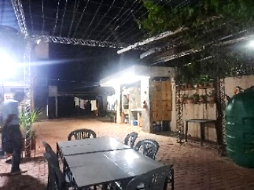
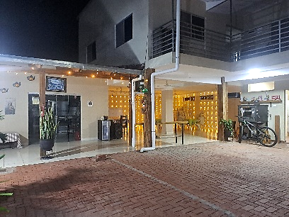
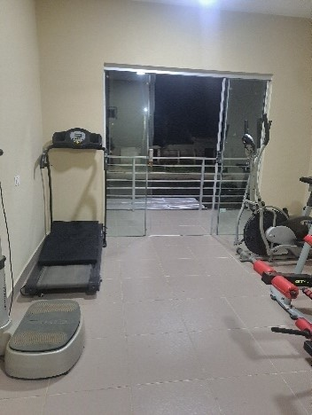
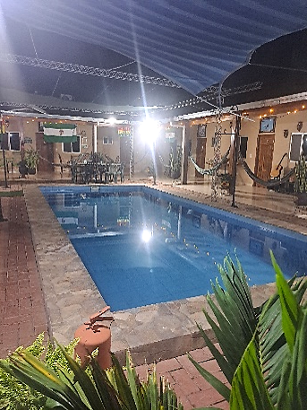
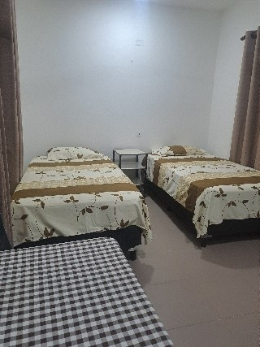
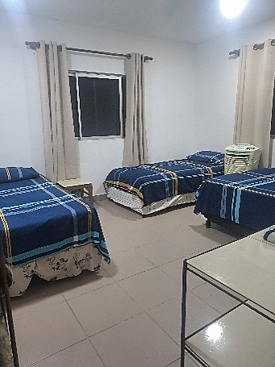